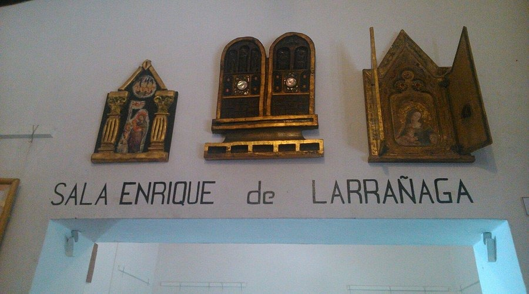
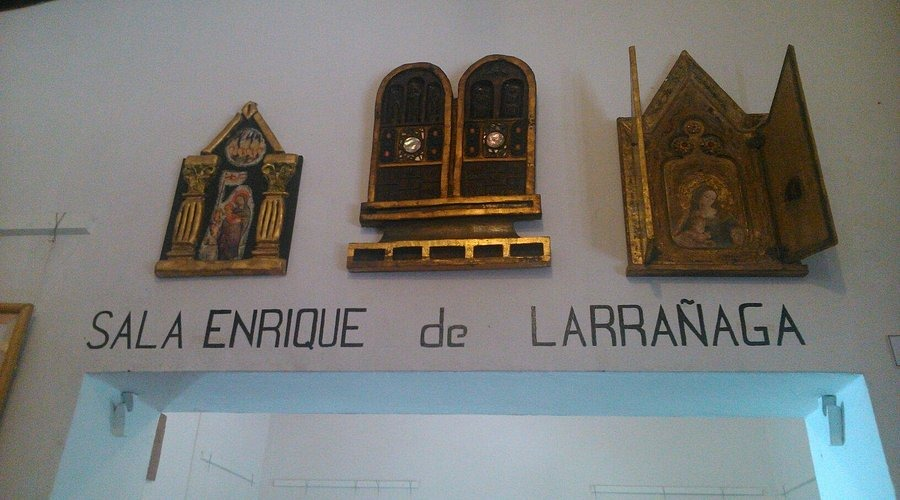

Museos de Tilcara
MEC Museo en los Cerros
El Museo en los Cerros (MEC) es un espacio cultural único ubicado en la Quebrada de Huichaira, a unos 5 kilómetros de Tilcara,
en la provincia de Jujuy, Argentina. Situado a 2.700 metros sobre el nivel del mar, el museo se integra armónicamente con el entorno montañoso,
ofreciendo una experiencia que combina arte, arquitectura y comunidad.
Historia y propósito
Fundado por el fotógrafo argentino Lucio Boschi, el MEC nació con la intención de devolver a la comunidad local parte de lo que él había recibido
durante sus años de trabajo en la región. Inspirado por la cosmovisión andina, Boschi creó un espacio que no solo exhibe arte, sino que también sirve
como punto de encuentro y aprendizaje para los habitantes de la zona
Arquitectura y diseño
El museo fue diseñado por el arquitecto tucumano César Rodríguez Marquina, quien utilizó técnicas tradicionales de construcción con adobe, piedra y barro.
La estructura consta de varios módulos interconectados por galerías y patios, mimetizándose con el paisaje circundante y respetando la estética de los pueblos andinos
Colección y actividades
El MEC alberga una colección permanente de fotografía argentina, con obras donadas por reconocidos artistas como Adriana Lestido, Marcos López y Facundo de Zuviría.
Además, el museo organiza exposiciones temporales, talleres, charlas y cuenta con una biblioteca especializada en fotografía


Para más informacion precione aqui: Museo en Los Cerros
Museo Argeologico Dr.Eduardo Casanova2
El Museo de Bellas Artes “Fundación Hugo Irureta” es una destacada institución cultural ubicada en el corazón de Tilcara, Jujuy, en la intersección de las calles
Belgrano y Bolívar. Fundado el 2 de octubre de 1987 por el artista plástico Hugo Irureta y María de las Mercedes Ramírez, el museo abrió sus puertas al público el 30
de enero de 1988 con el objetivo de promover el arte y la cultura en el noroeste argentino.
Colección y exposiciones


Para más informacion precione aqui: Museo Arqueologico Dr. Eduardo Casanova
Posta de Hermillons
Se encuentra sobre la ruta 9. Es un museo de asequias y construcciones históricas que además exhibe copias de cartas de Belgrano y otros próceres, vasijas, armas de distintos tiempos, un carruaje, morteros y otras herramientas del 1800 en adelante.


Para más informacion precione aqui: Museo Posta de Hermillons
Museo Irureta
Se encuentra en el centro de Tilcara es un lugar de interés cultural por la variedad de cuadros y esculturas que pueden apreciarse en el. Las fotografías que comparto ilustran a los amantes del arte sobre la variedad de pinturas con diferentes técnicas que pueden disfrutar allí.
 

Para más informacion aqui: Museo Irureta
Museo Ernesto Soto Avandaño
Este Museo ocupa la casa que perteneció al Cnel. Manuel Alvarez Prado (1785-1836) héroe gaucho de la Quebrada de Humahuaca en las luchas por la Independencia y las Guerras Civiles. La casa mantiene la arquitectura original de estilo colonial y fue declarado Monumento Histórico Nacional en 1958.
Ernesto Soto Avendaño (1886-1969) egresó de la Academia Nacional de Bellas Artes del UBA y fue el ganador del 1° Premio para la ejecución del "Monumento a los Héroes de la Independencia" que se encuentra en Humahuaca y que fuera inaugurado en 1950. La maqueta original de la obra se encuentra expuesta en este museo.Se pueden observar pertenencias del Cnel Alvarez Prado y bocetos y obras en yeso donadas por Soto Avendaño al pueblo de Tilcara en 1966

Para más informacion aqui: Museo Ernesto Soto
Museo Regional de Pintura Jose A Terry
Está dedicado a conservar, resgurdar y exhibir las pinturas de Terry (1878-1954) que retrató en muchas de sus obras la cultura de la quebrada, Esta fue su casa desde 1922 a la que posteriormente le construyó un atelier en la planta alta. El museo fue creado en 1956 y habilitado en 1966. Tiene tres patios a los lados de los cuales se disponen las distintas salas de exposición. La Sala I muestra obras realizadas en Tilcara donde se exhiben dos de sus obras más importantes que son “El Tuerto de Pucará” y “Juancito en Tilcara”, propiedad del Museo Terry y la Sala II obras hechas en Bs As y otros países. La Sala III de dibujos, bocetos y fotografías de algunas obras. La Sala IV con objetos y muebles que le pertenecieron. La Sala Atelier, en la planta alta tiene óleos, objetos utilizados para realizar sus trabajos de pinturas y otras pertenencias
Hay una Sala de Exposiciones Temporarias y una Sala de Conferencias para promoción de diversas actividades artísticas


Para más informacion aqui: Museo Regional de Pinturas